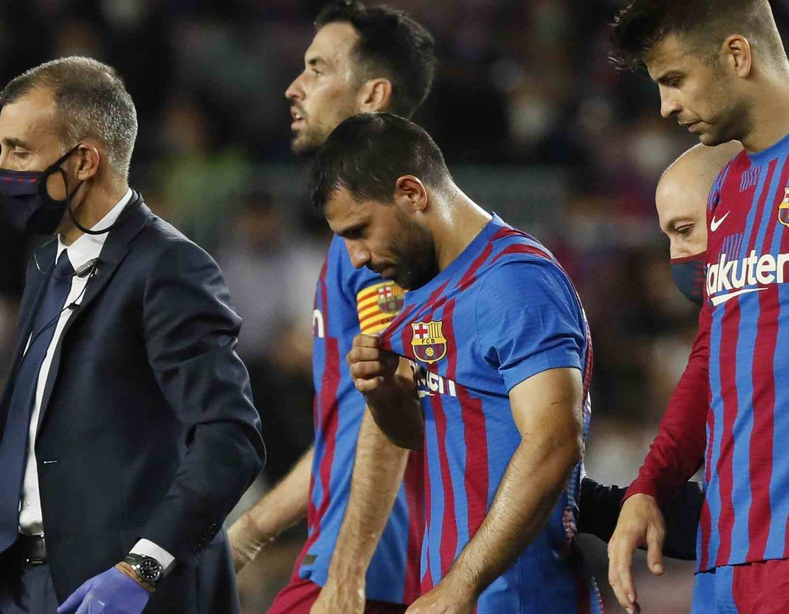

Su final en Barcelona
El 31 de mayo de 2021, tras firmar por dos años, Sergio fue presentado oficialmente como nuevo jugador del FC Barcelona y con mucho entusiasmo de seguir consiguiendo títulos. Pero el 30 de octubre de 2021 el Kun, durante un partido de La Liga, tuvo que salir del campo de juego al notar un malestar cardíaco. Los primeros estudios arrojaron que había sufrido una arritmia y que estaría fuera de los campos de juego por 90 días. Un mes y medio después, y tras las pruebas que le realizaron y con la recomendación de los médicos Sergio decidió poner punto final a su trayectoria profesional. En el Barcelona F.C. participó de cinco encuentros, dos como titular, y convirtió su último gol en el clásico frente al Real Madrid.
Presentación con mucha ilusión
Ya dejando atrás Manchester y luego de conseguir la Copa América con Argentina, Sergio busca nuevos aires y decide continuar su carrera en el Barcelona de España.
Pésima noticia
En sus primeros partidos, luego de demorarse en debut en el club español, el "Kun" sufre una lesión que dramática en el corazón que lo aleja del fútbol y por ende decide dejarlo definitivamente ya que no le permite jugar.
